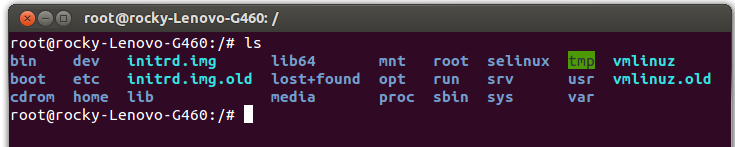

系统结构

/bin
引导启动所需的命令或普通用户可能用的命令(可能在引导启动后)
/boot
引导加载器(bootstrap loader)使用的文件，如LILO。核心映象也经常在这里，而不是在根目录。如果有许多核心映象，这个目录可能变得很大，这时可能使用单独的文件系统更好
/cdrom
这个目录在刚刚安装系统的时候是空的。可以将光驱文件系统挂在这个目录下。例如：mount /dev/cdrom /cdrom
/dev
包括所有设备的设备文件。设备文件用特定的约定命名，这在设备列表中说明 (见[Anv])。
设备文件在安装时产生，以后可以用 /dev/MAKEDEV 描述。
/dev/MAKEDEV.local 是系统管理员为本地设备文件(或连接)写的描述文稿 (即如一些非标准设备驱动不是标准MAKEDEV 的一部分)。
/etc
特定机器的配置文件
/etc 目录包含很多文件。下面说明其中的一些。其他的你应该知道它们属于哪个程序，并阅读该程序的man页。许多网络配置文件也在/etc 中，它们在《网络管理指南》中说明。
/etc/rc or /etc/rc.d or /etc/rc?.d
启动、或改变运行级时运行的scripts或scripts的目录，更详细的信息见关于init 的章。
/etc/passwd
用户数据库，其中的域给出了用户名、真实姓名、家目录、加密的口令和用户的其他信息。格式见passwd 的man页。
/etc/fdprm
软盘参数表。说明不同的软盘格式。用setfdprm 设置。更多的信息见setfdprm 的man页。
/etc/fstab
启动时mount -a命令(在/etc/rc 或等效的启动文件中)自动mount的文件系统列表。 Linux下，也包括用swapon -a启用的swap区的信息。见4.8.5节和mount 的man页。
/etc/group
类似/etc/passwd ，但说明的不是用户而是组。见group 的man页。
/etc/inittab
init 的配置文件。
/etc/issue
getty 在登录提示符前的输出信息。通常包括系统的一段短说明或欢迎信息。内容由系统管理员确定。
/etc/magic
file 的配置文件。包含不同文件格式的说明，file 基于它猜测文件类型。见magic 和file 的man页。
/etc/motd
Message Of The Day，成功登录后自动输出。内容由系统管理员确定。经常用于通告信息，如计划关机时间的警告。
/etc/mtab
当前安装的文件系统列表。由scripts初始化，并由mount 命令自动更新。需要一个当前安装的文件系统的列表时使用，例如df 命令。
/etc/shadow
在安装了影子口令软件的系统上的影子口令文件。影子口令文件将/etc/passwd 文件中的加密口令移动到/etc/shadow 中，而后者只对root可读。这使破译口令更困难。
/etc/login.defs
login 命令的配置文件。
/etc/printcap
类似/etc/termcap ，但针对打印机。语法不同。
/etc/profile , /etc/csh.login , /etc/csh.cshrc
登录或启动时Bourne或C shells执行的文件。这允许系统管理员为所有用户建立全局缺省环境。各shell见man页。
/etc/securetty
确认安全终端，即哪个终端允许root登录。一般只列出虚拟控制台，这样就不可能(至少很困难)通过modem或网络闯入系统并得到超级用户特权。
/etc/shells
列出可信任的shell。chsh 命令允许用户在本文件指定范围内改变登录shell。提供一台机器FTP服务的服务进程ftpd 检查用户shell是否列在 /etc/shells 文件中，如果不是将不允许该用户登录。
/etc/termcap
终端性能数据库。说明不同的终端用什么"转义序列"控制。写程序时不直接输出转义序列(这样只能工作于特定品牌的终端)，而是从/etc/termcap 中查找要做的工作的正确序列。这样，多数的程序可以在多数终端上运行。见termcap 、 curs_termcap 和terminfo 的man页。
/home
本地用户主 (home) 目录
initrd.img
initrd是“initial ramdisk”的简写。initrd一般被用来临时地引导硬件到实际内核vmlinuz能够接管并继续引导的状态。initrd- 2.4.7-10.img主要是用于加载ext3等文件系统及scsi设备的驱动。比如，使用的是scsi硬盘，而内核vmlinuz中并没有这个 scsi硬件的驱动，那么在装入scsi模块之前，内核不能加载根文件系统，但scsi模块存储在根文件系统的/lib/modules下。为了 解决这个问题，可以引导一个能够读实际内核的initrd内核并用initrd修正scsi引导问题。initrd-2.6.20-1.img是用 gzip压缩的文件，initrd实现加载一些模块和安装文件系统等功能。
initrd映象文件是使用mkinitrd创建的。mkinitrd实用程序能够创建initrd映象文件。这个命令是RedHat专有的。其它Linux发行版或许有相应命令。这是个很方便的实用程序。具体情况请看帮助:man mkinitrd下面的命令创建initrd映象文件。（ubuntu中的src code中是可以编译该文件的）
initrd是linux在系统引导过程中使用的一个临时的根文件系统，用来支持两阶段的引导过程。
直白一点，initrd就是一个带有根文件系统的虚拟RAM盘，里面包含了根目录‘/’，以及其他的目录，比如：bin，dev，proc，sbin，sys等linux启动时必须的目录，以及在bin目录下加入了一下必须的可执行命令。
PC或者服务器linux内核使用这个initrd来挂载真正的根文件系统，然后将此initrd从内存中 卸掉，这种情况下initrd其实就是一个过渡使用的东西。 在现在的许多简单嵌入式linux中一般是不卸载这个initrd的，而是直接将其作为根文件系统使用，在这之前就需要把所需要的程序，命令还有其它文件 都安装到这个文件系统中。其实现在的大多数嵌入式系统也是有自己的磁盘的，所以，initrd在现在大多数的嵌入式系统中也和一般的linux中的作用一 样只是起过渡使用。
Initrd的引导过程：‘第二阶段引导程序’，常用的是grub将内核解压缩并拷贝到内存中，然后内 核接管了CPU开始执行，然后内核调用init()函数，注意，此init函数并不是后来的init进程！！！然后内核调用函数 initrd_load()来在内存中加载initrd根文件系统。Initrd_load()函数又调用了一些其他的函数来为RAM磁盘分配空间，并计 算CRC等操作。然后对RAM磁盘进行解压，并将其加载到内存中。现在，内存中就有了initrd的映象。
然后内核会调用mount_root()函数来创建真正的根分区文件系统，然后调用sys_mount()函数来加载真正的根文件系统，然后chdir到这个真正的根文件系统中。
最后，init函数调用run_init_process函数，利用execve来启动init进程，从而进入init的运行过程。
initrd.img.old
/lib
根文件系统上的程序所需的共享库
/lib/modules
核心可加载模块，特别是那些恢复损坏系统时引导所需的(例如网络和文件系统驱动)
/lib64
系统库文件[可能只有AMD64版本的才有]
/lost+found
在ext2或ext3文件系统中，当系统意外崩溃或机器意外关机，而产生一些文件碎片放在这里。当系统启动的过程中fsck工具会检查这里，并修复已经损坏的文件系统。有时系统发生问题，有很多的文件被移到这个目录中，可能会用手工的方式来修复，或移到文件到原来的位置上。
/media
挂载可移动介质 (media)，诸如 CD、数码相机等
/mnt
系统管理员临时mount的安装点。程序并不自动支持安装到/mnt 。
/mnt 可以分为子目录(例如/mnt/dosa 可能是使用MSDOS文件系统的软驱，而/mnt/exta 可能是使用ext2文件系统的软驱)
/opt
提供一个供可选的 (optional) 应用程序安装目录。好多大一点的软件都是缺省向这里安装了
/proc
核心在内存中产生的虚拟文件系统，是一个假的文件系统。它不存在在磁盘某个磁盘上。而是由核心在内存中产生。用于提供关于系统的信息(originally about processes, hence the name)。下面说明一些最重要的文件和目录。 /proc 文件系统在proc man页中有更详细的说明。
/proc/1
关于进程1的信息目录。每个进程在/proc 下有一个名为其进程号的目录。
/proc/cpuinfo
处理器信息，如类型、制造商、型号和性能。
/proc/devices
当前运行的核心配置的设备驱动的列表。
/proc/dma
显示当前使用的DMA通道。
/proc/filesystems
核心配置的文件系统。
/proc/interrupts
显示使用的中断，and how many of each there have been.
/proc/ioports
当前使用的I/O端口。
/proc/kcore
系统物理内存映象。与物理内存大小完全一样，但不实际占用这么多内存；it is generated on the fly as programs access it. (记住：除非你把它拷贝到什么地方，/proc 下没有任何东西占用任何磁盘空间。)
/proc/kmsg
核心输出的消息。也被送到syslog 。
/proc/ksyms
核心符号表。
/proc/loadavg
系统"平均负载"；3个没有意义的指示器指出系统当前的工作量。
/proc/meminfo
存储器使用信息，包括物理内存和swap。
/proc/modules
当前加载了哪些核心模块。
/proc/net
网络协议状态信息。
/proc/self
到查看/proc 的程序的进程目录的符号连接。当2个进程查看/proc 时，是不同的连接。这主要便于程序得到它自己的进程目录。
/proc/stat
系统的不同状态，such as the number of page faults since the system was booted.
/proc/uptime
系统启动的时间长度。
/proc/version
核心版本。
/root
root用户的家目录
/run
目录中存放的是自系统启动以来描述系统信息的文件。 比较常见的用途是daemon进程将自己的pid保存到这个目录。 标准要求这个文件夹中的文件必须是在系统启动的时候清空，以便建立新的文件。
/sbin
类似/bin ，但不给普通用户使用，虽然如果必要且允许时可以使用
/selinux
对SElinux的一些配置文件目录，SElinux可以让linux更加安全。
/srv
服务启动后，所需访问的数据目录，举个例子来说，www服务启动读取的网页数据就可以放在/srv/www中
/sys
/dev用到的设备目录树，/sys反映你机器当前所接的设备
/tmp
临时文件。引导启动后运行的程序应该使用/var/tmp ，而不是/tmp ，因为前者可能在一个拥有更多空间的磁盘上
/usr
文件系统经常很大，因为所有程序安装在这里。 /usr 里的所有文件一般来自Linux distribution；本地安装的程序和其他东西在/usr/local 下。这样可能在升级新版系统或新distribution时无须重新安装全部程序。 /usr 的有些子目录在下面列出(一些不太重要的目录省略了，更多信息见FSSTND)。
usr/X11R6
X Window系统的所有文件。为简化X的开发和安装，X的文件没有集成到系统中。 X自己在/usr/X11R6 下类似/usr 。
/usr/X386
类似/usr/X11R6 ，但是给X11 Release 5的。
/usr/bin
几乎所有用户命令。有些命令在/bin 或/usr/local/bin 中。
/usr/sbin
根文件系统不必要的系统管理命令，例如多数服务程序。
/usr/man , /usr/info , /usr/doc
手册页、GNU信息文档和各种其他文档文件。
/usr/include
C编程语言的头文件。为了一致性这实际上应该在/usr/lib 下，但传统上支持这个名字。
/usr/lib
程序或子系统的不变的数据文件，包括一些site-wide配置文件。名字lib来源于库(library); 编程的原始库存在/usr/lib 里。
/usr/local
本地安装的软件和其他文件放在这里。
/var
这个目录的内容是经常变动的，看名字就知道，可以理解为vary的缩写，/var下有/var/log 这是用来存放系统日志的目录。
/var/ www目录是定义Apache服务器站点存放目录；
/var/catman
当要求格式化时的man页的cache。man页的源文件一般存在/usr/man/man* 中；有些man页可能有预格式化的版本，存在/usr/man/cat* 中。而其他的man页在第一次看时需要格式化，格式化完的版本存在/var/man 中，这样其他人再看相同的页时就无须等待格式化了。 (/var/catman 经常被清除，就象清除临时目录一样。)
/var/lib
系统正常运行时要改变的文件。用来存放一些库文件，比如MySQL的，以及MySQL数据库的的存放地
/var/local
/usr/local 中安装的程序的可变数据(即系统管理员安装的程序)。注意，如果必要，即使本地安装的程序也会使用其他/var 目录，例如/var/lock 。
/var/lock
锁定文件。许多程序遵循在/var/lock 中产生一个锁定文件的约定，以支持他们正在使用某个特定的设备或文件。其他程序注意到这个锁定文件，将不试图使用这个设备或文件。
/var/log
各种程序的Log文件，特别是login (/var/log/wtmp log所有到系统的登录和注销) 和syslog (/var/log/messages 里存储所有核心和系统程序信息。 /var/log 里的文件经常不确定地增长，应该定期清除。
/var/run
保存到下次引导前有效的关于系统的信息文件。例如， /var/run/utmp 包含当前登录的用户的信息。
/var/spool
mail, news, 打印队列和其他队列工作的目录。每个不同的spool在/var/spool 下有自己的子目录，例如，用户的邮箱在/var/spool/mail 中。
/var/tmp
比/tmp 允许的大或需要存在较长时间的临时文件。 (虽然系统管理员可能不允许/var/tmp 有很旧的文件。)
vmlinuz
vmlinuz是可引导的、压缩的内核。“vm”代表“Virtual Memory”。Linux支持虚拟内存，不像老的操作系统比如DOS有640KB内存的限制。Linux能够使用硬盘空间作为虚拟内存，因此得名“vm”。vmlinuz是可执行的 Linux内核，它位于/boot/vmlinuz，它一般是一个软链接（但是在ubuntu上我看却实实在在是个文件）。
vmlinuz的建立有两种方式。
一是编译内核时通过“make zImage”创建，然后通过:“cp /usr/src/linux-2.4/arch/i386/linux/boot/zImage /boot/vmlinuz”产生。zImage适用于小内核的情况，它的存在是为了向后的兼容性。
二是内核编译时通过命令“make bzImage”创建，然后通过:“cp/usr/src/linux-2.4/arch/i386/linux/boot/bzImage /boot/vmlinuz”产生。bzImage是压缩的内核映像。需要注意，bzImage不是用bzip2压缩的，bzImage中的bz容易引起误解，bz表示“big zImage”。 bzImage中的b是“big”意思。
zImage(vmlinuz)和bzImage(vmlinuz)都是用gzip压缩的。它们不仅是一个压缩文件，而且在这两个文件的开头部分内嵌有 gzip解压缩代码。所以你不能用gunzip 或 gzip –dc解包vmlinuz。内核文件中包含一个微型的gzip用于解压缩内核并引导它。两者的不同之处在于，老的zImage解压缩内核到低端内存0x0001 0000(第一 个640K)，bzImage解压缩内核到高端内存0x0010 0000(1M以上)。如果内核比较小，那么可以采用zImage或bzImage之一，两种方式引导的系统运行时是相同的。
vmlinuz.old